Cradle of culture
Africa: Sahel, West and Central
The Sahel, the Guinea coast and the forests of central Africa.
Deep Past and First Games 16
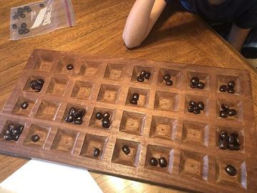
Kisolo
DR Congo +1 · Board and table games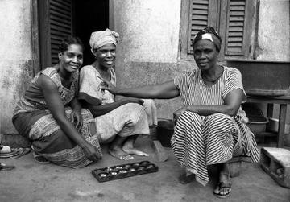

Abbia
Cameroon · Other traditionsKale
Gabon · Board and table gamesLocal mancala variants
Equatorial Guinea · Board and table gamesMancala-type sowing games
Central African Republic · Board and table gamesMangola
DR Congo · Board and table gamesNgola
Congo · Board and table gamesPilolo
Ghana · Street and playground gamesPoo
Liberia · Board and table gamesSija
Chad · Board and table games
River Valleys and First Cities 4
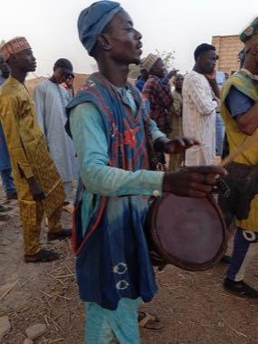
Kokawa Hausa Wrestling
Nigeria +1 · Wrestling and martial sports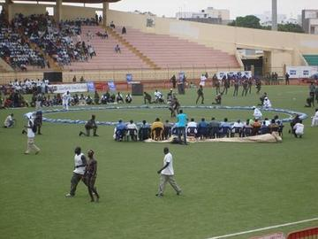
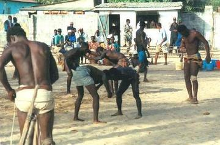
Traditional wrestling
Cameroon · Street and playground games
Classical Worlds 4
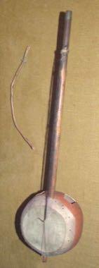
Fula Riti One-String Fiddle
Guinea · Musical instruments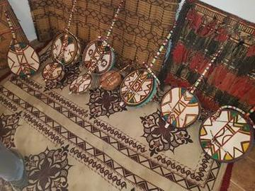
Imzad Fiddle
Niger +2 · Musical instruments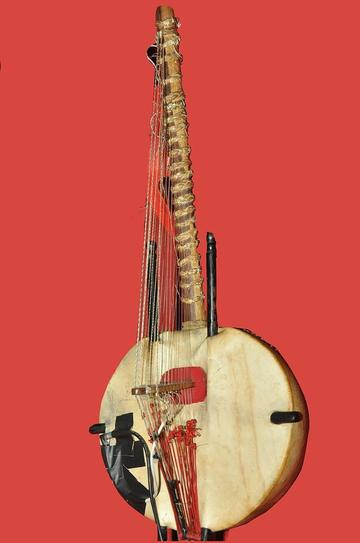
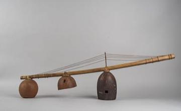
Mvet
Gabon +2 · Musical instruments
Crossroads and Golden Ages 16
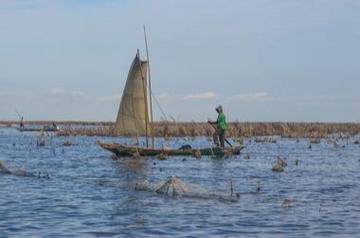
Acadja Fish Park
Benin · Board and table games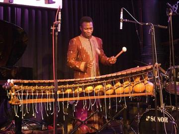
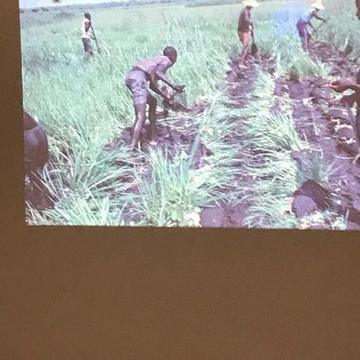
Balanta Mangrove Rice Polder
Guinea-Bissau · Board and table gamesNzango
Congo · Board and table games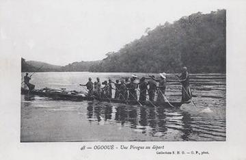
Ogooué river pirogue journey
Gabon · Racing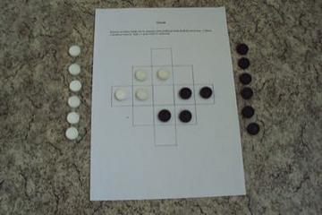
Queah
Liberia · Board and table games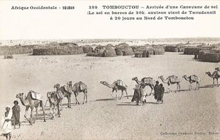
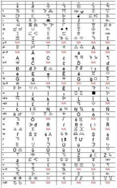
Vai Syllabary Decoder
Liberia · Puzzles and mind games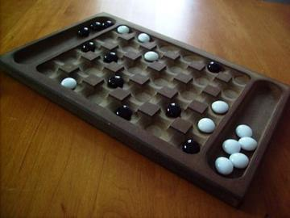
Akedewama
Cote d'Ivoire · Board and table gamesChoko
Gambia · Board and table gamesDhamet
Mauritania · Board and table gamesDuo
Cote d'Ivoire · Board and table gamesFohr
Cote d'Ivoire · Board and table gamesKikouri
Cote d'Ivoire · Board and table gamesSig
Mauritania · Board and table games
Age of Contact and Craft 2
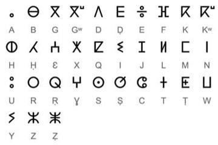
Tifinagh Letter Puzzle
Niger +3 · Puzzles and mind gamesAchi
Ghana · Board and table games
Modern Heritage 12
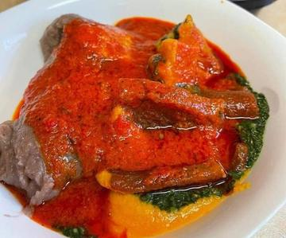
Abula
Nigeria · Street and playground games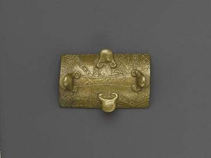
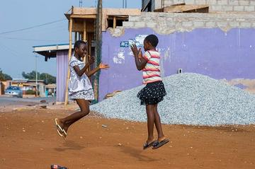
Dambe
Nigeria +1 · Street and playground games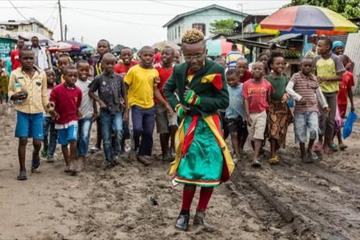
La Sape dress-up parade
Congo · Street and playground games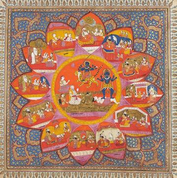
Ten Ten
Nigeria · Dexterity and skill gamesBulundu
DR Congo · Street and playground gamesKuli
Congo · Street and playground gamesPutu
Burkina Faso · Street and playground gamesYuyu
Burkina Faso · Street and playground games
Living Traditions 37
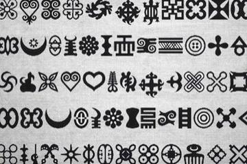
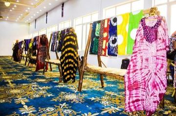
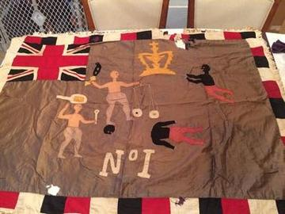
Asafo Flag Appliqué
Ghana · Crafts and making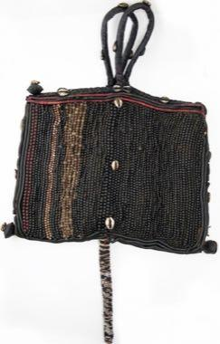
Bamileke beadwork designer
Cameroon · Crafts and making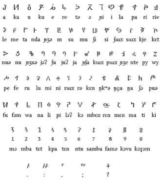
Bamum script writer
Cameroon · Crafts and making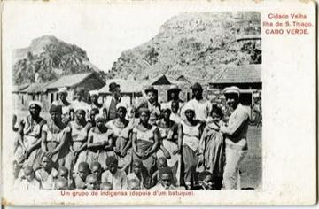
Batuque Cloth-Drum Circle
Cape Verde · Musical instruments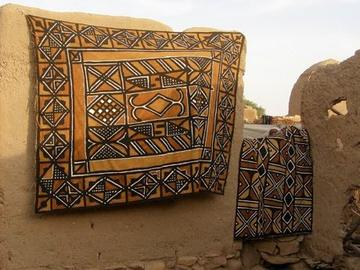
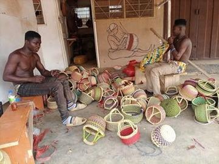
Bolga Basket Weaver
Ghana · Crafts and making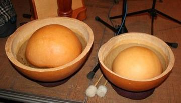
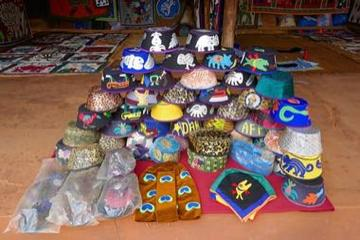
Dahomey Appliqué Panel Studio
Benin · Crafts and making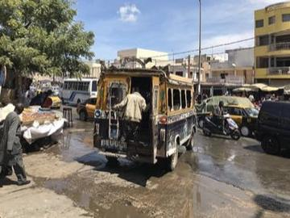
Dakar Car Rapide Livery Painter
Senegal · Crafts and making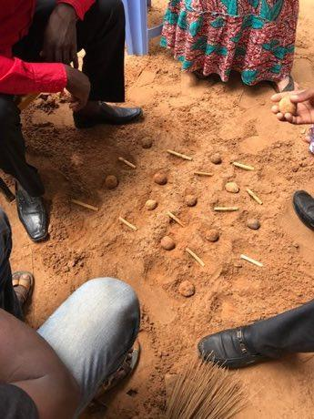
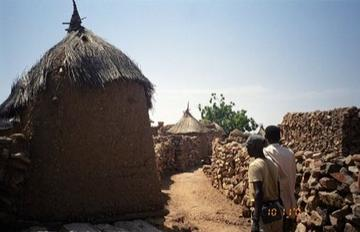
Dogon Granary Builder
Mali · Crafts and making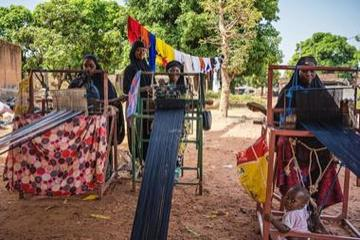
Faso Dan Fani Strip Weaving
Burkina Faso · Crafts and making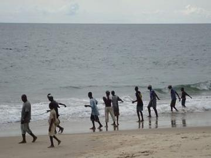
Freetown Beach Seine Haul
Sierra Leone · Performance and storytelling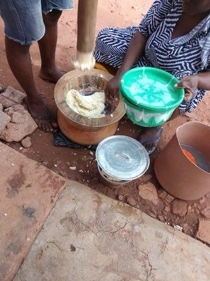
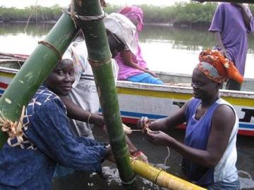
Gambian Oyster Harvest
Gambia · Crafts and making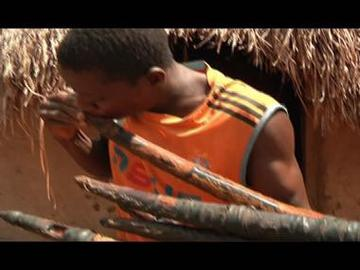
Gbofe Trumpet Ensemble
Cote d'Ivoire · Other traditions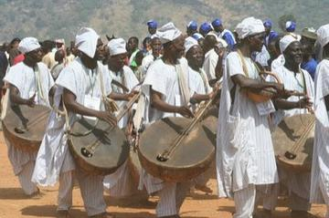
Goje One-String Fiddle
Nigeria +1 · Musical instrumentsPlay preview · in the String Music of the World app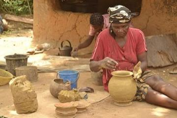
Ikpu Ite Coil Pot
Nigeria · Crafts and making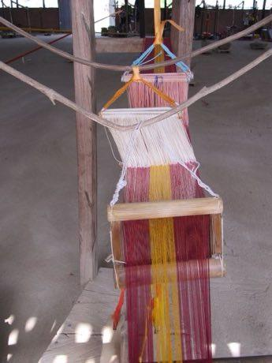
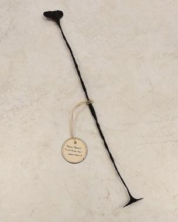
Kissi Penny Forging
Guinea +2 · Crafts and making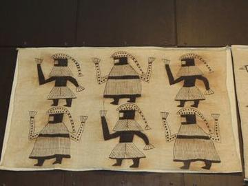
Korhogo Painted Cloth Studio
Cote d'Ivoire · Crafts and making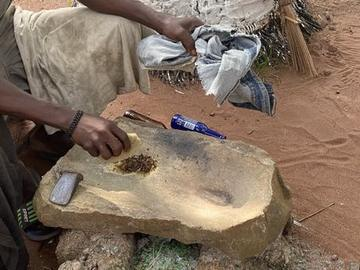
Krobo Powder-Glass Beads
Ghana · Crafts and making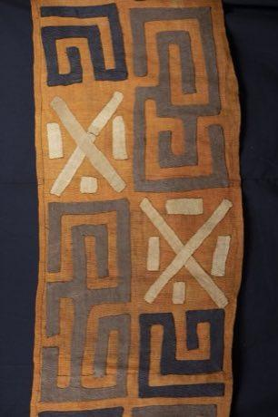
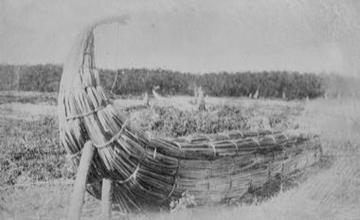
Lake Chad reed boat builder
Chad · Crafts and making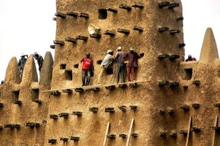
Mud Plaster Season
Mali · Crafts and makingOualata Wall Painting
Mauritania · Crafts and makingPanu di Pinti Weaving
Guinea-Bissau · Crafts and makingSão Tomé cocoa and chocolate maker
Sao Tome and Principe · Crafts and makingSierra Leone Country Cloth Strip Loom
Sierra Leone · Crafts and makingTakienta Tower-House Builder
Togo · Crafts and makingTalking drum
Nigeria · Musical instrumentsTchiloli masked play
Sao Tome and Principe · Performance and storytellingTuareg Tea
Niger · Crafts and making